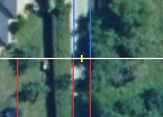
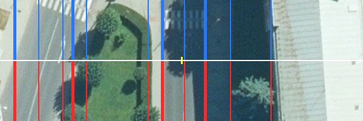
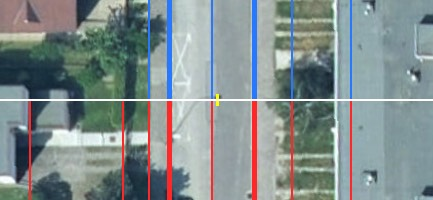

Pasporty slovenských měst: bez pasportu (nahoře, modře) a s pasportem (dole, červeně)
Řez zleva (A) doprava (B), ±10 m podél ulice, 10 px = 1 m. Silné čáry = okraje vozovky, tenké = ostatní hranice, žlutá = střed řezu, * = odhad. Ortofoto © GKÚ Bratislava, NLC (ZBGIS, CC BY 4.0).

50 · (bez názvu) ()
bez doplnění: chodnik 2.8
s doplněním: plocha 9.55 · chodnik 2.8

96 · Čs. armády ()
bez doplnění: chodnik 3.4 · pruh 4 · pruh 4 · krajnice 1.65 · chodnik 2.25 · zelen 10.2 · chodnik 2.3 · pruh 3.77 · pruh 3.33 · chodnik 4.2 · nezname 6.7
s doplněním: chodnik 3.4 · pruh 4 · pruh 4 · krajnice 1.65 · chodnik 2.25 · zelen 10.2 · chodnik 2.3 · pruh 3.77 · pruh 3.33 · chodnik 4.2 · zelen 6.7

37 · Tranovského ()
bez doplnění: chodnik 2 · pruh 4.27 · pruh 4.27 · chodnik 3.8 · nezname 5.85
s doplněním: plocha 9.25 · zelen 2.65 · chodnik 2 · pruh 4.27 · pruh 4.27 · chodnik 3.8 · zelen 5.85